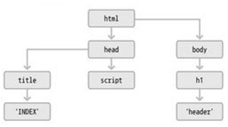
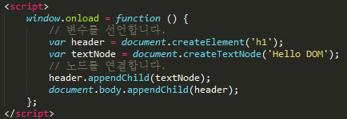
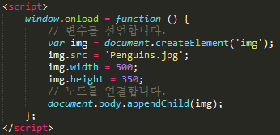
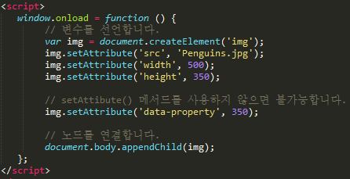
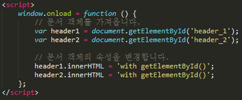
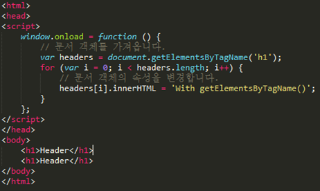
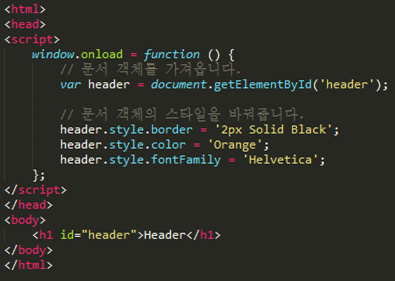
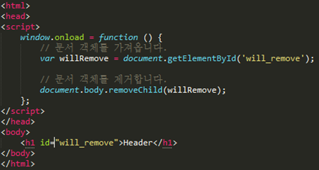

1. Document Object Model
2. 웹브라우저가 HTML페이지를 인식하는 방식
3. document 객체와 관련된 객체의 집합
4. 태그를 자바스크립트에서 이용할 수 있는 객체로 만든것이 문서 객체다.
- 요소노드
- 텍스트노드

header 객체를 '문서 객체’라고 부름.
HTML 페이지를 트리 모양으로 나타낼 수 있다.
각 요소를 '노드'라고 부른다.
HTML 페이지를 DOM으로 나타내면 요소 노드는 바로 HTML 태그를 의미하고,
텍스트 노드는 요소 노드 안에 들어있는 글자를 의미한다.
Ex) <h1>제목태그</h1> -> h1은 요소 노드, 제목태그는 텍스트 노드
# img태그는 텍스트 노드를 갖지 않는다.
웹 페이지가 처음 HTML 페이지에 적혀 있는 태그들을 읽으며 생성하는 것을
"정적으로 문서를 객체를 생성한다"라고 표현한다.
페이지의 내용을 특별한 변화 없이 생성하기에 붙은 이름이다.
반면에 자바스크립트를 이용해 원래 HTML 페이지에는 없던 객체를 생성하는 것을
"동적 문서 객체를 생성한다"라고 표현한다.
텍스트 노드를 갖는 문서 객체를 생성하려면 요소 노드와 텍스트 노드를 생성한 후에 텍스트 노드를 요소 노드에 붙여준다.
document 객체가 가지는 메서드를 사용해 요소 노드와 텍스트 노드를 생성할 수 있다.
화면에 문서 객체를 츨력하려면 생성한 문서 객체를 body 문서 객체에 연결해야 한다.
또한 생성한 요소 노드와 텍스트 노드도 연결해야 한다.

createElement(tagName) - 요소 노드를 생성
createTextNode(text) - 텍스트 노드를 생성
appendChild(node) - 객체에 노드를 연결
DOM에서는 속성도 하나의 노드이므로, 속성 노드를 생성해 요소 노드에 붙어야한다.
img 태그에 이미지를 넣으려면 src 속성을 지정해야 한다.
웹 표준이 정의하거나 웹 브라우저가 지원하는 태그의 속성에만 사용할 수 있다.

웹 브라우저가 지원하지 않는 속성은 아래 메서드를 사용해야 속성을 넣을 수 있다.

setAttribute(name, value) - 객체의 속성을 지정
getAttribute(name) - 객체의 속성을 가져옴
태그의 id 속성이 id와 일치하는 문서 객체를 가져옵니다.
document 객체의 getElementById() 메서드는 한 번에 한 가지 문서 객체만 가져올 수 있습니다.

getElementsByName(name) - 태그의 name 속성이 name과 일치하는 문서 객체를 배열로 가져옵니다.
getElementsByTagName(tagname) - tagname과 일치하는 문서 객체를 배열로 가져옵니다.
배열로 순서대로 들어감
-> 반복문 사용시,' for in' 반복문 사용 불가
(브라우저에 따라 속성과 메서드 종류에 차이가 있음)
-> '단순 반복 for문' 사용

1. getElementById()메서드를 사용해 문서 객체를 가져옴
2. 문서객체의 style 속성을 지정 <문서객체.style.속성 = '값'>

removeChild(Child) - 문서 객체의 자식 노드를 제거합니다.
h1 태그를 가져오고, body 문서 객체에서 removeChild() 메서드를 사용해 h1 태그를 제거한다.
body 문서 객체 바로 아래에 제거하고자 하는 문서 객체가 있으므로 가능한 코드다.
willRemove.parentNode.removeChild(willRemove);
h1 태그에서 부모 노드로 이동한 후 부모 노드에서 자식 노드를 삭제된 것.
